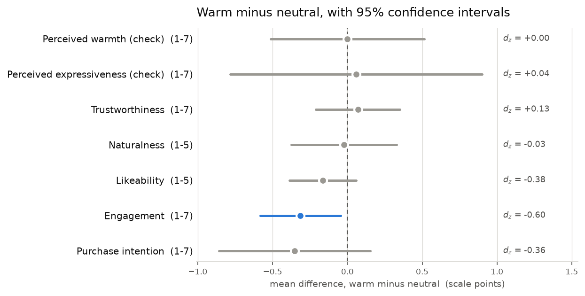
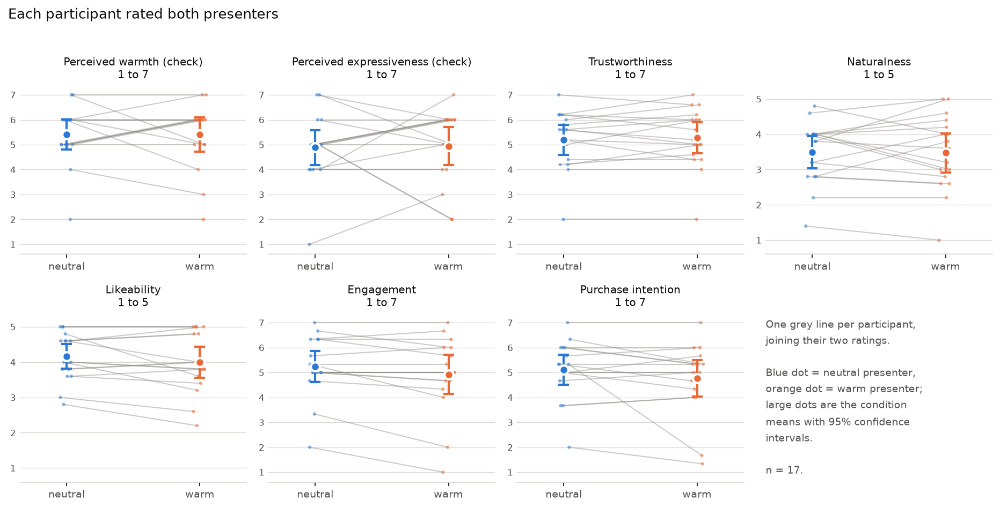
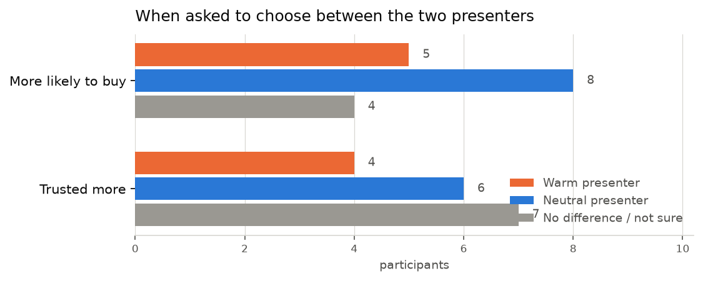

The question
Does emotional expression make a synthetic presenter more persuasive?
AI-generated presenters are already selling things. The open question is how expressive they should be. A flat delivery may read as cold and mechanical; too much warmth may read as fake. The wider project asks where the useful middle sits, across four levels of expressiveness: neutral, warm, enthusiastic and exaggerated.
This pilot tests only the first step of that ladder — neutral versus warm — with three goals: show that the whole procedure works, check that the emotional manipulation is actually noticed, and get first effect-size estimates to plan a properly powered study.
Stated in advance
Before any data arrived, the prediction was: warm would be rated higher on perceived warmth (the manipulation check), and higher on likeability, engagement and purchase intention. Trust and naturalness were left as open questions.
- 37opened the study and consented
- 31finished it
- 17in the main analysis
- 62presenter ratings collected
The stimulus
The two videos
Both advertise the same fictional product, a “Kora” insulated water bottle, with the same claims in the same order. The intended difference is only in the presenter's manner: facial expression, intonation and gesture. Judge for yourself whether they differ — that turns out to be the central issue.
Calm, flat intonation, minimal gesture, neutral expression. 25.7 seconds.
Friendly smile, warmer and slightly more varied intonation, open gestures. Deliberately not over the top. 27.4 seconds.
What could not be matched
Both clips were generated rather than acted, so the two takes differ in ways that have nothing to do with emotion. These are reported rather than hidden, because they matter for reading the results:
- the background tone differs: cool grey in the neutral take, warmer beige in the warm one;
- the presenter's face is not quite identical between the two generations;
- the opening line differs slightly (“Meet Kora,” against “Kora. Meet Kora.”), as does how the price is spoken;
- the burned-in captions highlight different words;
- one sentence present only in the neutral take was cut at a shot change so the two scripts matched word for word.
Audio loudness was matched (to −16.5 LUFS) so that neither clip was simply louder. Only the overall level was changed; intonation was left untouched.
Procedure
How it was run
A within-subject design: every participant saw both videos, so each person acts as their own baseline. With a sample this small that is far more sensitive than splitting people into two groups. The cost is that participants can compare the two takes, which invites them to guess what is being tested.
Order was counterbalanced. The server handed out the next sequence in rotation, so the two orders stayed balanced as people arrived:
| Sequence | First video | Second video | Finishers |
|---|---|---|---|
| S1 | Neutral | Warm | 13 |
| S2 | Warm | Neutral | 18 |
What a participant went through
- ConsentPlain-language purpose, roughly 8–10 minutes, voluntary, anonymous, 18+. It stated up front that the presenters are digitally generated.
- Sound checkA three-second clip; the participant picked the word they heard from four options. Without working audio the whole study is meaningless.
- Background questionsAge band, gender, country, comfort with spoken English, education, occupation, online shopping, social media use, AI tool use, and whether they had seen AI presenters before.
- First video, then rating blockThe video could not be skipped or fast-forwarded, and the Continue button only appeared once it had played to the end.
- Second video, then the same rating blockThe next video was preloaded while they answered, so the slower connections did not stall.
- Direct comparisonWhich presenter did you trust more? Which made you more likely to buy? Plus two optional free-text questions.
- Debrief and completion codeShown only after the server confirmed the data was saved.
Measures taken to keep the data clean
- Forced full viewing. Seeking forward was blocked, and actual watched seconds, pauses and replays were recorded for every view.
- Randomised item order. Items were shuffled within each block per participant, and the order shown was stored, so question order cannot masquerade as an effect.
- An attention check hidden among the second block's items.
- Drop-out tracking. If someone left mid-way, a marker recorded the screen they stopped on, so the funnel could be counted rather than guessed.
- No personal data. No names, emails, IP addresses or location. Each participant is a random identifier generated in their own browser; the only device information kept is “mobile” or “desktop”.
Who took part
A convenience sample, recruited through personal networks and social media — not a representative sample of anyone. Of the 17 in the main analysis: 11 were aged 18–24, 4 were 25–34 and 2 were 35–44; 12 were men and 5 women; 12 were in Pakistan and 5 elsewhere. All 17 took it on a phone, which is why the study was built mobile-first.
Of the 37 who consented, 6 left without finishing: 4 at the sound check, 1 during a video and 1 in a rating block.
Instruments
What was measured
After each video the participant answered the same 23 rating items. Scales were adapted from published instruments rather than invented, so results can be compared with existing work.
| Measure | Items | Scale | Adapted from |
|---|---|---|---|
| Perceived warmth & expressiveness manipulation check |
2 | 1–7 | — |
| Trustworthiness | 5 | 1–7 | Ohanian (1990), source credibility |
| Naturalness / anthropomorphism | 5 | 1–5 | Godspeed (Bartneck et al., 2009) |
| Likeability | 5 | 1–5 | Godspeed (Bartneck et al., 2009) |
| Engagement | 3 | 1–7 | written for this pilot |
| Purchase intention | 3 | 1–7 | Dodds, Monroe & Grewal (1991) |
Instruction shown above every video, worded so it never hints at what differs: “This study is about the presenter, not the video's production quality. Please pay attention to how the presenter speaks and comes across.”
Analysis
How it was analysed
Two rules fixed before the data existed
The analysis was pre-specified. The tests, the exclusion rules and the definition of a successful manipulation check were all written down before collection began. Nothing below was chosen after seeing which result looked better.
No AI anywhere in the analysis. Every number on this page comes from one deterministic Python script with a fixed random seed. No language model summarised, interpreted or produced any statistic. Re-running the script on the same data reproduces every figure exactly.
Exclusions
Six rules were set in advance. In the event, only one of them removed anybody — but it removed a lot of people:
| Pre-specified rule | Excluded |
|---|---|
| Test/debug submissions | 0 |
| Failed the attention check | 14 |
| Did not watch both videos to the end | 0 |
| Never passed the sound check | 0 |
| Finished in under three minutes | 0 (both were already excluded above) |
| Gave an identical answer to every item | 0 |
| Remaining for analysis | 17 |
Fourteen of thirty-one people failed the attention check. That is 45%, which is far too high to blame on the participants. The item asked them to select “Somewhat agree”, sitting on a seven-point scale next to “Agree”, on a phone, among items they were answering quickly. It is more likely that the check itself was badly designed than that half the sample was careless. Because this cost so much of the sample, every headline result below is also reported for all 31 finishers.
The tests
- Paired t-test for each outcome, warm against neutral, two-sided.
- Wilcoxon signed-rank as a robustness check, because these are rating scales with a small n.
- Effect size as Cohen's dz with a bootstrap 95% confidence interval (5,000 resamples, seed 42), plus the raw mean difference with its interval.
- A mixed model per outcome to separate the effect of condition from the effect of position (first or second viewing).
- Exact binomial tests on the two forced choices.
Effect sizes lead; p values are reported but do not decide anything. There is no correction for multiple comparisons, so with seven outcomes, everything except the manipulation check is exploratory.
Results
The manipulation did not land
The manipulation check was the one test that had to work. It did not. Participants rated the warm presenter's warmth at 5.41 and the neutral presenter's at 5.41 — a difference of 0.00 scale points (95% CI −0.51 to +0.51, dz = 0.00, p = 1.00). Of the 17 participants, 6 rated the warm version warmer, 4 rated the neutral version warmer, and 7 gave both exactly the same score.
Perceived expressiveness behaved the same way: 4.94 against 4.88, a difference of 0.06 points (dz = 0.04, p = .88).
The pre-specified rule was that the check counts as successful only if perceived warmth is higher for the warm version with a confidence interval excluding zero. It is not, so the rule applies as written: the remaining differences cannot be read as effects of warmth, because warmth is not what the two videos delivered.

| Outcome | Scale | Neutral M (SD) | Warm M (SD) |
Difference | 95% CI | dz | Paired t | Wilcoxon |
|---|---|---|---|---|---|---|---|---|
| Perceived warmth check | 1–7 | 5.41 (1.18) | 5.41 (1.33) | 0.00 | −0.51, +0.51 | 0.00 | p = 1.00 | p = .96 |
| Perceived expressiveness check | 1–7 | 4.88 (1.36) | 4.94 (1.48) | +0.06 | −0.78, +0.90 | +0.04 | p = .88 | p = .83 |
| Trustworthiness | 1–7 | 5.20 (1.17) | 5.27 (1.21) | +0.07 | −0.21, +0.35 | +0.13 | p = .60 | p = .55 |
| Naturalness | 1–5 | 3.49 (0.88) | 3.47 (1.07) | −0.02 | −0.38, +0.33 | −0.03 | p = .89 | p = 1.00 |
| Likeability | 1–5 | 4.16 (0.68) | 4.00 (0.86) | −0.16 | −0.39, +0.06 | −0.38 | p = .14 | p = .17 |
| Engagement | 1–7 | 5.24 (1.22) | 4.92 (1.53) | −0.31 | −0.58, −0.05 | −0.60 | p = .02 | p = .03 |
| Purchase intention | 1–7 | 5.12 (1.17) | 4.76 (1.44) | −0.35 | −0.86, +0.15 | −0.36 | p = .16 | p = .11 |
Engagement is the only interval that clears zero, and it points the opposite way to the prediction: people reported being slightly less engaged by the warm version. It should not be believed. It is one of seven uncorrected comparisons; the manipulation check failed, so it cannot be an effect of warmth; and across all 31 finishers it shrinks to −0.23 with an interval that includes zero (p = .10). It is most likely noise, or a response to the production differences between the two takes rather than to the presenter.

Asked to choose directly, people split
After both videos, participants were asked outright which presenter they trusted more and which made them more likely to buy. Neither question produced a majority for the warm version; the most common answer about trust was that there was no difference at all.

The measures themselves worked
One genuinely good result: the rating scales were highly internally consistent, in both conditions. Whatever went wrong, it was not the questionnaire.
| Scale | Items | Neutral | Warm |
|---|---|---|---|
| Trustworthiness | 5 | .94 | .96 |
| Naturalness | 5 | .87 | .92 |
| Likeability | 5 | .93 | .95 |
| Engagement | 3 | .84 | .91 |
| Purchase intention | 3 | .93 | .94 |
With 17 people these values are unstable and should not be over-read, but every scale sits comfortably above the threshold, and the three-item engagement scale written for this pilot held up alongside the published ones.
The one clear signal
Whichever video came second was rated higher
The condition made no difference. Position did. Separating the two in a mixed model shows a consistent, positive effect of being the second video watched — across nearly every outcome, regardless of which presenter it was.
| Outcome | Condition (warm vs neutral) | Position (second vs first) | ||
|---|---|---|---|---|
| Perceived warmth | −0.03 | p = .86 | +0.59 | p = .003 |
| Perceived expressiveness | +0.01 | p = .98 | +0.88 | p = .01 |
| Trustworthiness | +0.06 | p = .65 | +0.26 | p = .03 |
| Naturalness | −0.05 | p = .71 | +0.43 | p = .001 |
| Likeability | −0.18 | p = .02 | +0.29 | p < .001 |
| Engagement | −0.33 | p = .006 | +0.22 | p = .07 |
| Purchase intention | −0.37 | p = .11 | +0.34 | p = .15 |
Because the order was counterbalanced, this does not contaminate the comparison between conditions — it is exactly what counterbalancing is for. But it is a real finding in its own right, and a warning for the full study: showing someone the same advert twice produces a sizeable second-viewing bump that is larger than any difference the emotional manipulation produced.
What participants said they noticed
The open-text answers point the same way. Asked what made the difference between the two presenters, most people described production details, not manner:
“Background and Bottle handling is different in both videos, everything else is same.”
“The products color difference in both videos.”
“I didn't see a big difference at all and it felt real AI fake, but video 2 was a bit better.”
Where people did describe the presenter, they tended to describe whichever came second as the more human one — and that happened under both orders, which is the position effect showing up in words as well as numbers:
“In the first video the presenter seems un-human with a bit disconnection between the presenter and her actions. In the second video the presenter seems more human-like and body language seems natural.”
“Yes the second one looked more like a real human presenter.”
Interpretation
What this does and does not show
It does not show that emotional expression is irrelevant to persuasion. That hypothesis was never tested here, because the two videos were not perceived as differing in warmth. A manipulation that does not register cannot produce a downstream effect, and its absence says nothing about the underlying question.
What the pilot does establish is more modest, and genuinely useful for planning the full study:
- The apparatus works. Consent, sound check, forced full viewing, randomised items, counterbalanced assignment, retry-on-failure saving, drop-out tracking and a clean analysis pipeline all functioned on real phones on real connections. 31 of 37 people who consented finished, and no submitted run was lost.
- The measures work. Every scale was internally consistent (α .84–.96), including the engagement items written for this pilot.
- Generating a reliable emotional contrast is the hard part. Two prompts asking for “neutral” and “warm” delivery from the same video tool produced clips that viewers could not tell apart on warmth — while differing visibly in background, framing and caption detail. The manipulation, not the measurement, is where the next effort belongs.
- Repeated exposure matters. The second viewing was rated more warmly, more expressively and more naturally than the first, whichever clip it was.
- The attention check was too hard. Losing 45% of a sample to one item is a design fault worth fixing before scaling up.
The same conclusion holds without the exclusions
Because the attention check removed so many people, the whole analysis was repeated on all 31 finishers. The pattern is unchanged: perceived warmth differs by +0.13 points (dz = 0.12, p = .51), and no outcome has an interval clear of zero. This robustness check was added after seeing the exclusion rate, and is reported as an addition to the pre-specified plan rather than part of it.
Honesty
Limitations
- Tiny, non-representative sample. 17 analysed, recruited from personal networks, mostly 18–24, mostly in Pakistan, all on phones. Nothing here generalises to a population.
- Not powered. This pilot was never capable of detecting a small effect. A null result at this size is weak evidence of absence even when the manipulation works — and here it did not.
- The same advert twice. The second product planned for the study was never produced, so the design changed to showing one product twice. Participants could therefore compare takes directly and guess the purpose, and the second viewing was a familiar one.
- The two videos differ beyond emotion — background, face, opening line, spoken price, captions. Any difference found could have come from those instead.
- Seven outcomes, no correction. With uncorrected tests, roughly one spurious “significant” result is expected by chance. Exactly one appeared.
- AI disclosure. Participants were told the presenters were AI-generated, which is ethically required and increasingly realistic, but may itself shape trust ratings.
- One avatar, one product, one language, one culture.
Next
What the full study should change
- Fix the manipulation first, and pre-test itBefore collecting anything, run a small rating-only study on candidate clips and keep only pairs that are reliably separated on perceived warmth. Nothing else matters until that holds.
- Make the clips differ in exactly one thingSame background, same framing, same face, same captions, same spoken price — ideally one generation pipeline with only the delivery parameter changed, or a human actor recorded multiple ways.
- Go between-subjects, or use different productsShowing the same advert twice produced a second-viewing bump bigger than the manipulation. Different products per condition, or a between-subjects design with a larger sample, avoids it.
- Rewrite the attention checkUse an instruction that is unambiguous on a phone, and place it so that a fast but honest participant still passes.
- Plan the sample size from these estimatesThe pilot's reliable estimates are the scale reliabilities and the order effect, not the condition effects. For a within-subject comparison, detecting an effect the size of the engagement difference (dz = 0.60) with 80% power needs about 24 participants; a more realistic small effect of dz = 0.30 needs about 90.
The full study's four-level design — neutral, warm, enthusiastic, exaggerated — is also better suited to the real question, which is where expressiveness stops helping and starts hurting. A two-level test cannot find a turning point, only a slope.